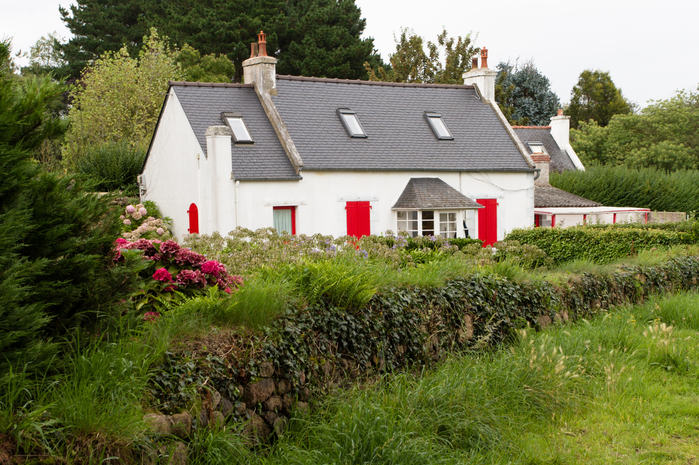
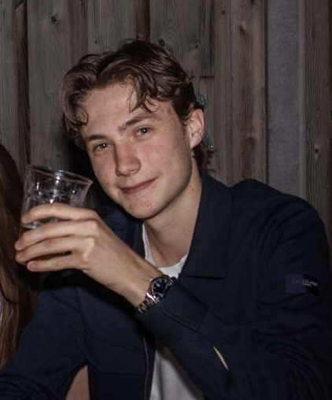

Onafhankelijke rendementscheck voor recreatiewoningen
Wat ik doe.
Het probleem waar het om draait.
Ik heb gezien dat meerdere mensen een probleem hadden bij een situatie. Ze hadden wat geld gespaard, en wouden het veilig investeren in vastgoed, voor bijvoorbeeld hun pensioen of een extra inkomen.
Bij de aankoop van een recreatiewoning door deze particuliere beleggers wordt een aantrekkelijk rendement beloofd door de vakantieparken. Ze komen uit op te hoge percentages, maar in de praktijk is het vaak geheel anders dan de marketing laat zien.

Dit probleem is niet zomaar iets waarbij een belegger denkt dat het gewoon tegenzat. Onafhankelijke bronnen bevestigen dat de rendementen in het echt flink kunnen tegenvallen als de bezettingsgraad, kosten en financiering niet realistisch worden ingeschat.
Wat het bedrijf doet.
Ik maak voor u een zo realistisch mogelijk rendementspercentage berekening. Ik hanteer een makkelijk te volgen rekenmethode, waarbij ik alles meeneem. Denk aan de bezettingsgraad, onderhoudskosten, financieringslasten, belastingen, verkoopkosten en de werkelijke kans op verhuur.
Deze methode kan worden toegepast op verschillende vastgoedobjecten, waarbij onze specialiteit ligt bij recreatiewoningen. Denk aan een bungalow, vakantieboerderij of een andere vorm van vakantieverblijf.
Wanneer u denkt dat dit voor u ten voordele kan zijn, hoeft u me alleen maar vrijblijvend te contacteren, waarbij we de mogelijkheden bespreken zonder verplichtingen.
We hebben als bedrijf geen verkoopbelang bij de woning die u wilt kopen. Wij krijgen geen commissie, en zijn op geen enkele manier betrokken bij de aanbieder van de woning. Wij werken uitsluitend in uw belang.

Wie ik help.
Ik heb gezien dat dit probleem zich vooral voorkomt bij de voorzichtige, beginnende belegger die voor de eerste keer of juist een tweede keer een recreatiewoning overweegt. Deze mensen willen goed nadenken, maar hebben vaak niet genoeg inzicht in de echte cijfers achter de presentatie.
Voor hen is een onafhankelijke berekening belangrijk: niet om te overtuigen, maar om te begrijpen. Zo kan er met meer vertrouwen worden besloten of een aankoop echt past bij het doel, de financiering en het risicoprofiel.
Over mij.
Ik ben Sven Bos, 17 jaar, en zit momenteel in mijn examenjaar op het vwo (profiel Economie & Maatschappij). Naast school werk ik bij een makelaardij en met een jonge onderneming die mij helpt om nader inzicht te krijgen in vastgoed, cijfers en ondernemen.
Het idee voor Voor Je Tekent is ontstaan vanuit twee momenten. De eerste was toen een familielid van mij zich afvroeg wat het rendement zou zijn als hij zou investeren in een recreatiewoning. De tweede was toen ik merkte dat veel mensen het idee hadden dat vastgoed automatisch ‘veilig’ was.
Ik ging thuis nalezen hoe interessant het is voor mensen om daarin te investeren, en kwam na veel onderzoek tot de conclusie dat in Nederland de rendementspercentages die gegeven worden vaak niet volledig realistisch zijn. Ik wil mensen helpen om die beloftes met een kritische blik te bekijken.
